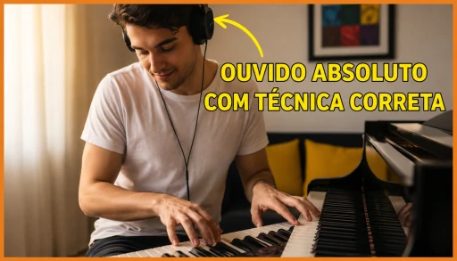

O início da missão
Foi nos palcos que tudo ganhou sentido
Helena descobriu que a música seria muito mais do que uma profissão. Seria a missão de sua vida.
Conheça o Método Loop Auditivo: exercícios guiados para reconhecer notas, acordes e melodias treinando apenas 7 a 15 minutos por dia, mesmo que você não leia partitura.
Acesso online • Compra segura • Garantia de 30 dias
Helena descobriu que a música seria muito mais do que uma profissão. Seria a missão de sua vida.
A dedicação ao piano abriu portas para experiências inesquecíveis, permitindo conhecer novos lugares, culturas e músicos ao redor do mundo.
Ao compartilhar seu conhecimento na internet, Helena passou a ensinar milhares de músicos, formando uma das maiores comunidades de treinamento auditivo em língua portuguesa.
Só consegue tocar quando a cifra ou partitura está na frente.
Trava quando alguém pede para acompanhar uma música na hora.
Acredita que tocar de ouvido é um “dom” que você não recebeu.
Já tentou aplicativos e exercícios soltos, mas não manteve evolução.
O problema pode não ser falta de talento. Muitas vezes, é falta de uma sequência de treino que ensine o cérebro a escutar, identificar e memorizar.
Em vez de decorar músicas isoladas, você desenvolve uma habilidade que acompanha toda a sua jornada musical.
Perceba notas, acordes e movimentos melódicos com mais clareza.
Diminua a dependência de cifras e encontre sons no instrumento.
Transforme o que você escuta em ideias musicais com confiança.
Avance com sessões curtas, práticas e fáceis de repetir.
Saiba o que exercitar sem se perder em conteúdos desconectados.
Use a percepção treinada no violão, teclado, sopros, voz e mais.

O Loop Auditivo organiza o treino em três movimentos que se reforçam a cada repetição.
Aprenda os estímulos corretos para desenvolver sua percepção auditiva desde o primeiro dia, sem teoria complicada e sem perder tempo com exercícios que não funcionam.
Faça seu cérebro entrar em um processo natural de escuta, identificação e memorização dos sons, acelerando seu aprendizado de forma automática.
Ouça qualquer música, descubra os acordes e reproduza no instrumento sem depender de cifras, tutoriais ou alguém te ensinando nota por nota. Tenha a liberdade de tocar o que quiser, quando quiser.
Relatos compartilhados por alunos do treinamento.
Resultados variam de acordo com o nível inicial, a frequência e a aplicação de cada aluno.
Aulas, áudios e exercícios guiados para desenvolver percepção, reconhecimento e memória auditiva.
Valor total: R$ 236,90
Mas hoje você não vai pagar R$ 236,90.
Nem R$ 197,00.
Nem mesmo metade disso.
Hoje você recebe tudo por apenas Ver condição especial ↓Valor total: R$ 236,90
Hoje por apenas
ou 9x de R$ 6,13 no cartão
Quero começar agora →Acesse o conteúdo, faça os exercícios e avalie com calma. Se dentro desse período você entender que o treinamento não é para você, basta solicitar o reembolso pelos canais de suporte.
Você desenvolve seu ouvido ou recebe seu investimento de volta.O treinamento foi pensado também para iniciantes e organiza os exercícios de maneira progressiva. O resultado depende da prática e do ponto de partida de cada pessoa.
Não. A proposta é prática e os conceitos necessários são apresentados dentro dos exercícios guiados.
As sessões podem ser feitas em cerca de 7 a 15 minutos. A consistência tende a ser mais importante do que treinos longos e esporádicos.
Sim. O foco é a percepção auditiva, que pode ser aplicada ao violão, teclado, guitarra, voz, sopros e outros instrumentos.
Depois da confirmação do pagamento, os dados de acesso são enviados para o e-mail usado na compra. O conteúdo pode ser acessado pelo celular, tablet ou computador.
Você tem 30 dias para testar o treinamento. Dentro desse prazo, pode solicitar o reembolso pelos canais informados na plataforma de compra.
Pronto para escutar a música com outros ouvidos?
Quero acessar o método →